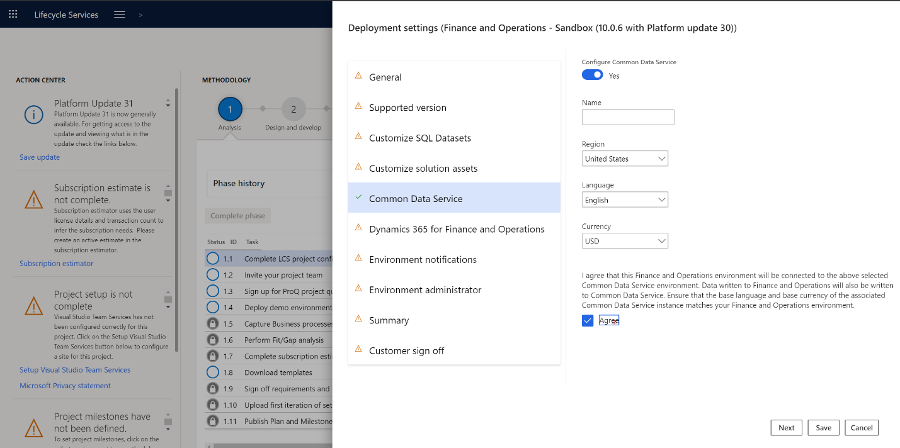
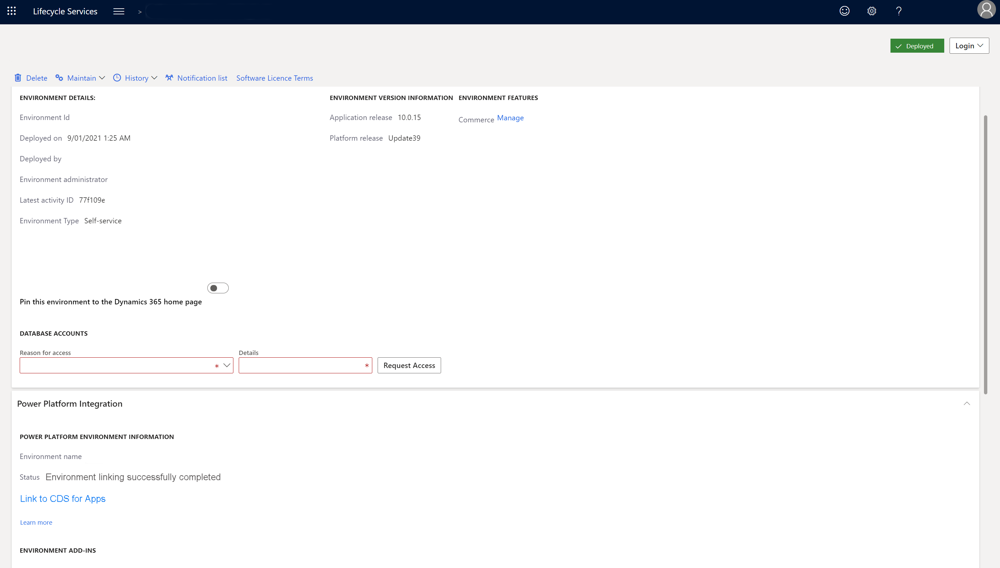

Dual-write setup from Lifecycle Services
[!include[rename-banner](~/includes/cc-data-platform-banner.md)]This topic explains how to set up a dual-write connection between a new Finance and Operations environment and a new Dataverse environment from Microsoft Dynamics Lifecycle Services (LCS).
Prerequisites
You must be an admin to set up a dual-write connection.
- You must have access to the tenant.
- You must be an admin in both Finance and Operations environments and Dataverse environments.
Set up a dual-write connection
Follow these steps to set up the dual-write connection.
In LCS, go to your project.
Select Configure to deploy a new environment.
Select the version.
Select the topology. If only one topology is available, it's automatically selected.
Complete the first steps in the Deployment settings wizard.
On the Dataverse tab, follow one of these steps:
If a Dataverse environment is already provisioned for your tenant, you can select it.
- Set the Configure Dataverse option to Yes.
- In the Available environments column, select the environment to integrate with your Finance and Operations data. The list includes all environments where you have admin privileges.
- Select the Agree check box to indicate that you agree to the terms and conditions.

If your tenant doesn't already have a Dataverse environment, a new environment will be provisioned.
Set the Configure Dataverse option to Yes.
Enter a name for the Dataverse environment.
Select the region to deploy the environment in.
Select the default language and currency for the environment.
Note
You can't change the language and currency later.
Select the Agree check box to indicate that you agree to the terms and conditions.

Complete the remaining steps in the Deployment settings wizard.
After the environment has a status of Deployed, open the environment details page. The Power Platform Integration section shows the names of the Finance and Operations environment and the Dataverse environment that are linked.

An admin of the Finance and Operations environment must sign in to LCS and select Link to CDS for Apps to complete the link. The environment details page shows the admin's contact information.
After the link is completed, the status is updated to Environment linking successfully completed.
To open the Data integration workspace in the Finance and Operations environment and control the templates that are available, select Link to CDS for Apps.

Note
You can't unlink environments by using LCS. To unlink an environment, open the Data integration workspace in the Finance and Operations environment, and then select Unlink.